방재기사 (2021-08-14 기출문제)
1과목: 재난관리
1. 재난현장에서 필요한 구조적 응급조치와 비구조적 응급조치에 관한 설명 중 틀린 것은?
- 침수방지턱, 빗물받이, 배수펌프장 설치는 구조적 대첵에 속한다.
- 비구조적인 대책은 구조적 대책과 병행함으로써 인명피해와 2차 피해를 최소화 하는데 유용하다.
- 일률적인 설계기준 상향 조정보다 해당지역의 위험도를 고려한 배수체계 개선대책은 구조적 대책에 속한다.
- 침수위험지역 내 비상전원 가동체계 구축 및 차수용 모래주머니 확보 등은 비구조적 대책에 속한다.
(정답률: 알수없음)

2. 재난 및 안전관리 기본법령상 재난의 예방ㆍ대비ㆍ대응 및 복구의 단계 중 재난의 대응을 위한 활동이 아닌 것은?
- 응급조치
- 위기경보 발령
- 위험구역 설정
- 특별재난지역 선포
(정답률: 알수없음)
3. 지구단위 종합복구 계획 수립기준상 지구단위 종합복구계획 수립 대상지 선정에 관한사항으로 틀린 것은?
- 중앙대책본부장은 피해발생일로부터 재해 상황을 상세히 기록하여 보관해야한다.
- 지역대책본부장은 지구 경계설정 시 토지 용도별 이용상태는 고려하지 않는다.
- 피해액의 산정은 선정한 지구내 피해를 시설별ㆍ부처별로 분류하고 공공시설과 사유시설의 피해액을 합한 값으로 한다.
- 중앙대책본부장은 피해규모와 유형 등을 지속적으로 관찰하여 지구단위 종합복구계획을 수립할 필요성이 있는지 판단해야 한다.
(정답률: 알수없음)
4. 농어촌정비법령상 비상대체계획을 수립해여야하는 농업기반시설물은?
- 연장이 2km 이상인 방조제
- 준공 후 30년 이상 경과한 댐ㆍ저수지
- 총 저수용량이 30만m3이상인 저수지
- 포용조수용량이 2천만m3이상인 방조제
(정답률: 알수없음)
5. 재난 및 안전관리 기본법령상 재난의 구호 및 복구를 위하여 지원하는 비용의 선지급 비율에 관한 사항으로 ( ）알맞은 내용은?
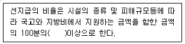
- 2
- 5
- 10
- 20
(정답률: 알수없음)
6. 특별재난지역 선포 사례가 아닌 것은?
- 1991년 낙동강 페놀 유출사고
- 1995년 삼풍백화점 붕괴 사고
- 2003년 대구 지하철 화재 사고
- 2012년 태풍 산바
(정답률: 알수없음)
7. 재난 및 안전관리 기본법령상 국가핵심기반지정을 위한 조정위원회 심의 기준중 틀린 것은?
- 다른 국가핵심기반 등에 미치는 연쇄효과
- 재난의 발생 가능성 또는 그 복구의 용이성
- 하나 이상의 중앙행정기관의 공동대응 필요성
- 재난이 발생하는 경우 국가안전보장과 경제ㆍ사회에 미치는 피해 규모 및 범위
(정답률: 알수없음)
8. 재난 및 안전관리 기본법령상 훈련주관기관의 장이 재난대비훈련을 실시하는 경우 훈련참여기관의 장에게 통보하여야 하는 사항이 아닌 것은? (단, 그밖에 훈련에 필요한 사항은 제외한다.)
- 훈련비용
- 훈련내용
- 훈련방법
- 훈련참여 인력
(정답률: 알수없음)
9. 자연재해대책법령상 수해내구성 강화를 위하여 수방기준을 제정하여야 하여야 하는 시설물이 아닌 것은?
- 도로법 시행령에 따른 교량
- 하천법에 따른 하천시설중 제방
- 하수도법에 따른 하수도중 개인하수처리시설
- 농어촌정비법에 따른 농업생산기반시설 중 저주지
(정답률: 알수없음)
10. 긴급구조대응활동 및 현장지휘에 관한 규칙상 통제단의 운영기준으로 틀린 것은?
- 대비단계에서는 긴급구조지휘대만 상시운영한다.
- 대응 1단계에서는 소규모 사고가 발생한 상황으로 긴급구조통제단은 운영할 수 없다.
- 대응 2단계에서는 시ㆍ도긴급구조통제단을 필요에 따라 부분 또는 전면적으로 운영한다.
- 대응 3단계에서는 둘 이상의 시ㆍ도에 걸쳐 재난 발생시 중앙통제단은 필요에 따라 부분 또는 전면적으로 운영한다.
(정답률: 알수없음)
11. 지진해일 대비 주민대피계획 수립 지침상 지진해일 대피지구의 범위 및 대상지역 지정범위에 관한 사항으로 ( )에 알맞은 내용은?
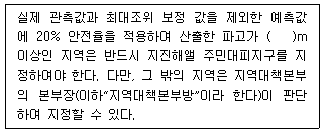
- 0.5
- 1
- 1.5
- 2
(정답률: 알수없음)
12. 하천재해 방재시설이 아난 것은?
- 댐
- 옹벽
- 제방
- 방수로
(정답률: 알수없음)
13. 재해구호법령상 재난구호를 위한 의연금품 모집 목표액이 10억원일 때, 모집에 필요한 경비의 최고 한도액으로 옳은 것은?
- 15,000,000원
- 20,000,000원
- 25,000,000원
- 30,000,000원
(정답률: 알수없음)
14. 재난 및 안전관리 기본법령상 중앙안전관리위원회의 위원장과 안전정책 조정위윈회의 위원장과 안전정책조정위원회의 위원장이 바르게 나열된 것은? (단, 직무대행 상황은 없다고 가정한다.)
- 국무총리, 행정안전부장관
- 국무총리, 방재관리대책 대행자
- 행정안전부장관, 행정안전부차관
- 행정안전부차관, 방재관리대책 대행자
(정답률: 알수없음)
15. 재난 및 안전관리 기본법령상 국가안전관리기본계획의 수립시 포항되어야 하는 사항을 모두 고른 것은?
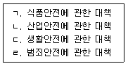
- ㄱ, ㄷ
- ㄱ, ㄴ, ㄹ
- ㄴ, ㄷ, ㄹ
- ㄱ, ㄴ, ㄷ, ㄹ
(정답률: 알수없음)
16. 자연재해대책법령상 해일위험지구의 지정ㆍ고시에 관한 설명 중 틀린 것은?
- 지진해일로 인하여 피해를 입었던 지역은 해일위험지구로 지정⁕고시 하여야 한다.
- 폭풍해일로 인하여 피해를 입었던 지역은 해일위험지구로 지정⁕고시하여 야한다.
- 해수면 상승에 의한 하수도 역류현상으로 침수 피해가 발생할 우려가 있는 지역은 해일위험지구로 지정⁕고시하여야 한다.
- 태풍으로 인한 풍랑으로 침수 또는 시설물 파손 피해가 발생한 지역은 해일위험지구로 지정⁕고시하지 않는다.
(정답률: 알수없음)
17. 재난 및 안전관리 기본법령상 특정관리대상지역의 안전등급에 따른 정기 안전점검 주기로 옳은 것은?
- A, B등급에 해당하는 특정관리대상지역: 반기별 1회 이상
- C등급에 해당하는 특정관리대상지역: 분기별 1회 이상
- D등급에 해당하는 특정관리대상지역: 월1회 이상
- E등급에 해당하는 특정관리대상지역: 월2회 이상
(정답률: 알수없음)
18. 재난 및 안전관리 기본법령상 사회재난에 해당하지 않는 것은?
- 미세먼지
- 화생방사고
- 소행성 추락
- 아프리카돼지열병의 확산
(정답률: 알수없음)
19. 재난 및 안전관리기본법령상 재난안전분야 종사자 교육에 관한 사항중 틀린 것은?
- 전문교육의 교육기간은 3일 이내로 한다.
- 전문교육 대상자는 신규교육을 받은후 1년 마다 정기교육을 받아야한다.
- 전문교육의 대상자는 해당업무를 맡은 후 1년 이내에 신규교육을 받아야 한다.
- 재난안전분야 종사자 전문교육은 관리자 전문교육과 실무자 전문교육으로 구분한다.
(정답률: 알수없음)
20. 재난 및 안전관리 기본법령상 응급조치에 사용할 장비 및 시설 중 철도 관리 기준으로 옳은 것은?
- 1일 열차 운행률 10% 이상 유지
- 1일 열차 운행률 20% 이상 유지
- 1일 열차 운행률 25% 이상 유지
- 1일 열차 운행률 30% 이상 유지
(정답률: 알수없음)
2과목: 방재시설
21. 자연재해저감 종합계획 세부수립기준상 방재시설 관련계획 중 시설정비 관련계획에 관한 사항으로 틀린 것은?
- 방재시설 정비 관련 계획은 위험지구 예비후보지 선정에는 반영하지 않는다.
- 국가ㆍ지방하천 및 소하천, 수도 및 하수도, 사방댐, 저수지, 항만 및 연안 등의 시설정비 관련계획을 조사한다.
- 방재시설 정비 관련 계획은 선정된 위험지구의 저감대책 및 시행계획 수립시 관련계획의 내용을 활용한다.
- 직접적인 연계성을 쉽게 파악하기 위하여 계획 전체 내용을 기술하는 것은 지양하고 자연재해저감 종합계획과 연계가 필요한 내용에 해당되는 사항만 기술한다.
(정답률: 알수없음)
22. 자연재해 저감종합계획 세부수립기준상 일반현황 조사대상중 자연현황 조사 항목이 아닌 것은?
- 해안현황
- 기상현황
- 지질 및 토양현황
- 재재관련지구 지정현황
(정답률: 알수없음)
23. [다음]의 자연재해 위험지구 예비후보지 선정기준에 해당하는 자연재해 유형은?
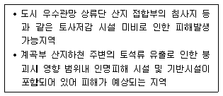
- 토사재해
- 사면재해
- 내수재해
- 하천재해
(정답률: 알수없음)
24. 하천설계기준상 수문조사에 따른 수위관측소의 관측대장에 기입해야 할 내용중 틀린 것은?
- 눈금판의 교체 등 간단한 보수공사의 내용은 기록할 필요가 없다.
- 수위관측소의 관리기관은 수위관측소 대장 및 관련도서를 작성하여 보관하여야 한다.
- 관측소명, 수계명, 위치도, 관측계기의 기종, 관측기록 발송상황등을 기재하여야 한다.
- 수위표지점 주변의 공사 등으로 인한 수위표의 일부 또는 전부를 단시간 이설할경우에도 세부적인 내용을 명확히 기록해 두어야한다.
(정답률: 알수없음)
25. 집중호우시 토사유량 저감을 위해 어떤 소유역에 설치된 침사지로 유입 할 토사의 체적을 산정한 결과 200m3/year 이었다. 준설주기를 년2회로 계획할 경우, 토사저류부의 저류용량(m3)은? (단, 침사지의 토사포착 효율은 80% 이다.)
- 80
- 120
- 160
- 200
(정답률: 알수없음)
26. 하천을 횡단하는 교량의 안전성을 검토하는데 필요한 요소가 아닌 것은?
- 경간장
- 교량 폭
- 교량 길이
- 형하 여유고
(정답률: 알수없음)
27. 자연재해대책법령상 해일피해경감계획의 수립ㆍ추진시 포함 되어야 하는 사항을 모두 고른 것은?
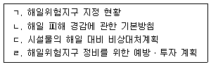
- ㄴ, ㄹ
- ㄱ, ㄴ, ㄷ
- ㄱ, ㄷ, ㄹ
- ㄱ, ㄴ, ㄷ, ㄹ
(정답률: 알수없음)
28. 폭풍해일 및 파랑으로 인한 재해 대책시설이 아닌 것은?
- 호안
- 흉벽
- 도류제
- 고조방파제
(정답률: 알수없음)
29. 재해이력 분석 중 자연재난 재해이력조사 분석자료 대상으로 가장 거리가 먼 것은?
- 재해연보
- 수해백서
- 재난연감
- 국가재난관리정보시스템(NDMS)
(정답률: 알수없음)
30. 자연재해위험개선지구 유형에 대한 설명이 바르게 연결된 것은?
- 유실위험지구 – 산사태, 절개사면 붕괴,낙석 등으로 인한 건축물이나 인명피해가 발생 또는 우려되는 지역
- 취약방재시설지구 – 배수문, 유수지. 저류지등 방재시설물이 노후화되어 재해발생이 우려되는 시설물
- 고립위험지구 – 하천의 외수범람 및 내수배제불량으로 인한 침수가 발생하여 피해를 유발하였거나 예상되는 지역
- 침수위험지구 – 집중호우 및 대설로 인하여 교통이 두절되어 지역주민의 생활에 고통을 주는 지역
(정답률: 알수없음)
31. 하천특성인자조사에 포함되지 않는 것은?
- 유로연장
- 하상경사
- 하상계수
- 유역의 방향성
(정답률: 알수없음)
32. 하천재해 방재시설 중 하천에서 발생하는 홍수를 방지하기 위해 바다로 직접적으로 연결하거나 인근 하천으로 연결하기 위해 인공적으로 설치하는 수로는?
- 방파제
- 유수지
- 방수로
- 배수펌프장
(정답률: 알수없음)
33. 하천재해의 종류와 위험요인의 연결이 틀린 것은?
- 하천범람 – 계획홍수량 과소 책정
- 호안유실 – 제방고 및 제방여유고 부족
- 제방붕괴 – 하천횡단구조물 파괴에 따른 연속 파괴
- 하천 횡단구조물 파괴 – 교각부 콘크리트 유실
(정답률: 알수없음)
34. 자연재해저감 종합계획 세부수립기준상 국가단위 관련계획에 관한 사항 중 틀린 것은?
- 국가하천, 국가산업단지등 국가에서 추진하는 시설정비, 문화ㆍ관광, 산업 관련계획을 조사한다.
- 국가단위 관련계획 조사는 대규모 국가사업추진으로 인하여 자연재해 발생에 미치는 영향은 고려하지 않는다.
- 국가단위 관련계획은 시설정비 관련계획, 토지이용 관련계획의 활용방안과 동일한 방법으로 연계ㆍ검토한다.
- 해당 국가단위 관련계획의 사업구역경계, 사업명칭, 위치, 면적, 사업기간 등의 정보와 함께 계획 대상지역의 위치를 확인할수 있도록 1/5,000 이상 축척의 위치도 및 토지이용계획도 등의 도면을 포함하여 제시한다.
(정답률: 알수없음)
35. 배수펌프 시설계획 수립에 관한 사항으로 틀린 것은?
- 총양정은 계획실양정으로 한다.
- 펌프용량은 유역의 유출특성과 유수지규모에 따라 결정한다.
- 계획실양정은 외수계획고수위와 내수의 저수위 수위차의 70~80% 범위로 한다.
- 펌프의 설비위치는 수리적으로 유리하도록 흡수정과 최대한 가깝게 한다.
(정답률: 알수없음)
36. 자연재해저감 종합계획 세부수립기준상 자연재해 특성분석 현황조사에 관한 사항으로 틀린 것은?
- 자연재해 원인특성은 해당 재해별 특성을 구분하여 분석한다.
- 주요 자연재해 특성 분석 내용은 위험지구 예비후보지 대상선정에 활용할수 없다.
- 피해현황은 국가재난관리정보시스템(NDMS)자료를 토대로 해당 자연재해로인하여 발생한 시설물별 피해 개소수, 피해액등의 피해현황을 조사한다.
- 주요자연재해 사상을 선정하여 주요내용(호우기간, 기상특성등), 기상개황, 기상특성, 자연재해원인특성, 피해현황, 복구현황, 피해원인분석등 대하 여기술한다.
(정답률: 알수없음)
37. 재난 및 안전관리 기본법령상 재난 및 사고 유형별 재난관리 주관기관으로 옳은 것은?
- 식용수 사고 - 산업통상자원부
- 저수지 사고 - 농림축산식품부
- 인접국가 방사능 누출사고 - 외교부
- 공연장에서 발생한 사고 - 행정안전부
(정답률: 알수없음)
38. [조건]을 활용할 때 침사지 유량(m3/s)은?
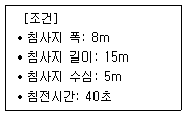
- 8
- 12
- 5
- 17
(정답률: 알수없음)
39. 하천설계기준상 제방 단면의 구조 및 명칭중 ( )에 알맞은 용어는?
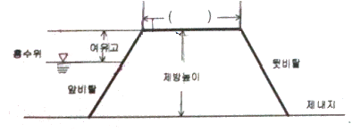
- 측단
- 앞턱
- 둑마루
- 제방머리
(정답률: 알수없음)
40. 자연재해저감 종합계획 세부수립기준상 기초자료 조사 중 인문현황 조사의 내용이 아닌 것은?
- 수문현황
- 인구현황
- 산업현황
- 문화재현황
(정답률: 알수없음)
3과목: 재해분석
41. 다음 복합재해에 관한 설명으로 옳은 것은?
- 복합재해 발생유역의 저감성평가는 정성적,정량적 평가를 실시할 필요 없다.
- 복합재해위험이 예상되는 지구에 대한 정량적 분석은 관련된 개별위험요인에 대한 분석을 수행하고 그 결과 최대위험요인을 적용한다.
- 수계 및 유역단위 재해 저감성 평가는(개선복구사업 지역, 복합재해 발생지역, 피해시설 상ㆍ하류의 인명 및 재산피해 발생우려지역) 재해 복구사업 지역경제 발전성 평가에 해당한다.
- 복합재해 산정하는 방법은 소요인력 = 소요인력기준 × 내수재해특성에 따른 보정계수 × 지역적 특성에 따른 보정계수 이다.
(정답률: 알수없음)
42. 방재성능 평가 후 통합 개선대책 수립시 기본방향이 아닌 것은?
- 1차적으로, 유하시설은 하수도 정비 기본계획에서 제시한 통수 단면적 기준으로 확장 또는 신설한다.
- 확장(신설)한 유하시설의 처리능력을 초과하는 홍수량에 대하여는 저류시설 또는 배수펌프장(신설 또는 증설)으로 분담한다.
- 저류시설 또는 배수펌프장 설치(신설ㆍ증설)가 어려운 지역은 유역대책 시설(녹지공간ㆍ침투시설) 및 예ㆍ경보시스템 도입등 비구조적 대책을 수립한다.
- 자연재해대책법에 따른 자연재해저감종합계획과의 연계성을 검토한다.
(정답률: 알수없음)
43. 방재성능목표 산정시 미래 강우 증가율을 고려한 기본할증률 5%를 초과하는 지역 중 ‘주의’로 구분된 지방자치단체 적용 할증률은?
- 6%
- 8%
- 10%
- 12%
(정답률: 알수없음)
44. 방재시설물의 경제성 평가방법에 대한 설명 중 틀린 것은?
- 편익, 비용분석의 평가기준으로는 순현가(NPV)만이 이용된다.
- 경제성 평가에서 비용은 직접비용, 간접비용, 유형비용 및 무형비용으로 구분할수 있다.
- 경제성 평가에서 편익은 직접편익과 간접편익, 유형편익, 무형편익으로 구분할수 있다.
- 편익의 측정방법으로는 시장가격에의한 평가방법, 대용가격에 의한 평가방법, 조사에 의한 평가방법으로 구분할 수 있다.
(정답률: 알수없음)
45. 어느 지역에서 재해발생 당시에 30분간 지속된 기간별 누가우량 조사 자료가 다음[표]와 같았다 이자료로 부터 지속시간 10분 최대 강우강도 [mm/hr]로 옳은 것은?
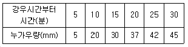
- 60.0
- 90.0
- 120.0
- 150.0
(정답률: 알수없음)
46. 방재성능 평가 절차상의 세부내용이 아닌 것은?
- 지하공간 침수방지를 위한 수방기준 적합성 검토
- 유역면적과 방재시설별 제원 및 일반현황
- 도시 강우ㆍ유출모델을 활용한 홍수유출량 산정
- 방재시설의 홍수처리 능력 평가 및 내수침수 발생여부 검토
(정답률: 알수없음)
47. 외수범람 형상의 유형이 아닌 것은?
- 확산형
- 저류형
- 축소형
- 유하형
(정답률: 알수없음)
48. 배수구역내에 30년 빈도의 그림과 같은 배수시설이 설치되었다 [조건]을 참고하여 합리식을 이용한 계획유량(mm3/min)은 약 얼마인가?
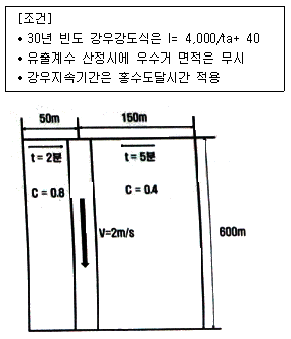
- 1.28
- 1.33
- 1.42
- 1.48
(정답률: 알수없음)
49. 방재성능목표 달성에 필요한 재정적 수요를 고려한 사항을 모두 고른 것은?
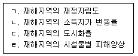
- ㄱ, ㄴ
- ㄱ, ㄷ
- ㄱ, ㄴ, ㄷ
- ㄱ, ㄴ, ㄹ
(정답률: 알수없음)
50. 자연재해의 장·단기복구활동에 공통적으로 포함되는 내용이 아닌 것은?
- 복구활동결과기록 및 보고서 작성
- 재난대응계획상의 복구 관련 요소의 검토
- 지역사회의 경제재건 및 활성화 프로그램 재발 시행
- 복구가 필요한 부분의 탐색 및 우선순위 결정
(정답률: 알수없음)
51. 재해복구사업 분석·평가 중에서 경제성 분석기법이 아닌 것은?
- 목표달성분석
- 다기준평가법
- 비용/편익분석
- 투입비용영향분석
(정답률: 알수없음)
52. 재해복수사업의 분석·평가 시행지침상 명시된 재해복구사업의 효과성· 경제성을 평가하는 경우 포함하여야 하는 사항이 아닌 것은?
- 재해복구사업의 차별성
- 재해복구사업 계획추진과 사후관리체계 적정성
- 침수유역과 관련된 재해복구사업의 침수저감능력과 경제성
- 재해복구사업으로 인한 지역의 발전성과 지역주민 생활환경의 쾌적성
(정답률: 알수없음)
53. 자연재해대책법령상 명시된 지역별 방재성능 목표 설정에 관한 사항으로 ( )에 알맞은 내용은?
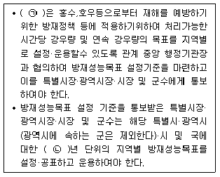
- ㉠ 행정안전부장관, ㉡ 5년
- ㉠ 지방자치단체장, ㉡ 5년
- ㉠ 행정안전부장관, ㉡ 10년
- ㉠ 지방자치단체장, ㉡ 10년
(정답률: 알수없음)
54. 토사 침식의 종류로 틀린 것은?
- 지표 흐름
- 구곡침식
- 구조물 침식
- 빗방울 침식
(정답률: 알수없음)
55. 재해지도 작성 기준등에 관한 지침상 대피장소 설치의 일반적인 기준은?
- 보행거리로부터 1km이내
- 보행거리로부터 2km이내
- 보행거리로부터 3km이내
- 보행거리로부터 5km이내
(정답률: 알수없음)
56. 자연재해저감 대책 수립시 저감대책의 공간적구분에 포함되지 않는것은?
- 수계 단위
- 집계구 단위
- 전 지역 단위
- 위험지구 단위
(정답률: 알수없음)
57. 자연재해대책법령상 명시된 방재시설에 대한 방재성능 평가에 따른 통합 개선대책에 포함되어야 하는 사항이 아닌 것은? (단, 그밖에 행정안전부장관이 정하는 사항은 제외한다.)
- 방재성능 평가 결과에 관한 사항
- 개선대책에 필요한 예산 및 재원대책
- 방재시설의 차별성을 고려한 개선계획
- 방재성능향상을 위한 개선대책에 관한 사항
(정답률: 알수없음)
58. 개발사업장에 침사지 겸 저류지를 설치하여 사업지역 하류부에 대한 2차 토사재해를 저감하고자 한다 [조건]을 활용할 때 침사지의 최소 소요수 면적(m2)은?
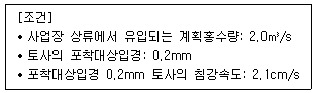
- 약 95.3
- 약 114.3
- 약 953.1
- 약 1143.2
(정답률: 알수없음)
59. 방재관련 법정계획 수립시 재해발생 원인에 대한 조사내용 중 적절하지 않은 것은?
- 유사한 국외 피해현황을 특성별로 비교
- 재해연보 및 수해백서 등의 문헌조사를 실시
- 국가재난관리정보시스템(NDMS)의 대장을 참조
- 조사내용은 자연재해저감종합계획 수립 시 재해위험지구 예비후보지 대상 선정에 활용
(정답률: 알수없음)
60. 지역별 방재성능목표 강우량은 지속시간 1시간,2시간 및 3시간에 대해 제시하고 있으나, 규모가 작은 방재시설의 능력평가 및 설계를 위한 임계지속시간 산정 시 약 10분 단위의 지속기간별 확률강우량이 필요한 경우 방재성능평가 방법으로 가장 적절한 것은?
- 임계지속기간을 강우지속기간 1시간,2시간 또는 3시간중에서 결정한다.
- 지역별 방재성능목표 강우량이 30년 빈도에 해당하므로 확률강우량을 재산정하여 30년빈도의 지속기간별 확률강우량을 적용한다.
- 시설물 설계를 위한 임계지속기간은 소규모시설의 경우 1시간, 중규모 시설의 경우 2시간 및 대규모 시설의 경우 3시간으로 결정한다.
- 재산정한 확률강우량과 지역별 방재성능목표 강우량을 비교하여 지역별 방재성능목표 강우량 보다 큰 확률강우량이 발생하는 재현기간의 확률 강우량을 적용한다.
(정답률: 알수없음)
4과목: 재해대책
61. 재해정보지도 중 피난활용형 재해정보지도에 관한 설명으로 틀린 것은?
- 대피에 관한 정보를 기재하고 주민의 안전한 대피에 활용한다.
- 침수 위험성에 대한 정보를 기재하고 주민이 거주하고 있는 지역의 범람 위험도를 인식시킨다.
- 범람으로 인한 피해등 방재에 관한 여러정보를 학습하도록 하여 재난대비 역량을 높인다.
- 침수심 및 침수도달시간, 대피방향, 대피로상의 위험장소, 풍수해 발생 시 행동요령, 경보발령체계를 기재한다.
(정답률: 알수없음)
62. 저류시설의 일반적인 유지관리 작업의 종류에 해당되지 않는 것은?
- 도장
- 시설 내의 점검 및 청소
- 냄새방지 및 동파방지대책
- 쓰레기제거 필터의 폐색 상황
(정답률: 알수없음)
63. 침수예상도에 대한 설명 중 틀린 것은?
- 침수예상도에는 홍수범람예상도, 내수침수예상도, 해안침수예상도로 세분한다.
- 내수침수예상도는 태풍, 호우 등 홍수로 인한 내륙지역의 하천범람 위험성에 대해서 정량적인 분석등을 통하여 침수예상지역, 피해범위, 예상 침수심 등에 표시한 지도를 의미한다.
- 침수예상도는 침수가 발생할수 있는 예상 시나리오를 사전에 상정한후 이를 기초로 수리,수문,해안공학적인 해석기법을 통해서 침수지역을 예측한 디지털형태의 지도를 의미한다.
- 해안침수예상도는 태풍,호우,해일등으로 인하여 해안지역에서 발생할수 있는 피해 가능성을 예측하여 침수예상지역, 피해범위,예상 침수심등을 지도상에 표시한 것이다.
(정답률: 알수없음)
64. 지역외 저류시설의 구조형식이 아닌 것은?
- 댐식
- 굴착식
- 이단식
- 지하식
(정답률: 알수없음)
65. 자연재해대책법령상 자연재해위험개선지구 정비계획의 수립에 관한 사항으로 옳은 것은?
- 시장·군수·구청장은 자연재해위험개선지구 정비계획을 5년마다 수립하여야 한다.
- 자연재해위험개선지구 지정 현황 및 연도별 지구 정비에 관한 사항은 포함하지 않는다.
- 시장·군수·구청장은 자연재해위험개선지구 정비사업계획을 2년마다 수립하여야 한다.
- 국무총리는 필요하면 시·도지사에게 자연재해 위험개선지구정비계획의 보완을 요청 요청할 수 있다.
(정답률: 알수없음)
66. 자연재해대책법령상 침수흔적도를 활용하지 않는 것은? (단, 그밖에 대통령령으로 정하는 사항은 제외한다.)
- 재해영향평가등의 협의
- 우수유출저감대책의 수립
- 지구단위종합복구계획의 수립
- 자연재해피해경감계획의 수립
(정답률: 알수없음)
67. 소하천 설계의 내용 중 틀린 것은?
- 수문의설치방향은 제방법선에 직각으로 최대한 간단한구조가 되도록한다.
- 수문, 배수통문 등의 설치위치는 하폭이 급변하지 않고 하상변동이 가장 큰 지점으로 선정한다.
- 집수암거(집수정)의 위치는 보, 교량등과 같은 구조물 인접지점, 하상변동이 크거나 수충부 및 지천 합류부등의 지점은 피한다.
- 일반적으로 고정보의 본체는 콘크리트구조를 원칙으로 하며, 구조적 안정성을 만족하는 동시에 수리학적으로 유리한 단면으로 설계한다.
(정답률: 알수없음)
68. 자연재해위험개선지구 투자우선순위 결정을 위한 비용편익 분석방법 중 간편법(원단위법)에 대한 설명으로 틀린 것은?
- 사업의 경제성이 비교적 높게 평가된다.
- 하천이나 수계전체의 입장을 고려하지 못한다.
- 경제성 분석을 위한 소요자료 및 인력소요가 적다.
- 농작물 피해액을 기준으로 피해계수를적용하므로 예상피해액 산정방법이 간편하다.
(정답률: 알수없음)
69. 침수흔적도를 작성하는데 기반이 되는 도면은?
- 경사향도
- 음영기복도
- 연속지적도
- 토지이용계획도
(정답률: 알수없음)
70. 자연재해저감 종합계획 세부수립기준 상 위험지구단위 저감대책 수립방법에 관한 사항 중 틀린 것은?
- 위험지구단위 저감대책의 영향이 미치는 공간적 범위가 개별 위험지구단위 범위로 한정되는 저감대책이다.
- 위험지구 저감대책은 위험도지수와 상관없이 구조적저감대책만 수립한다.
- 위험도지수를 4등급으로 분류하여 등급별로 저감대책을 수립할수 있다.
- 위험지구단위 저감대책 수립시 기존도 자연재해저감 종합계획에의 포함 여부를 확인하여야 한다.
(정답률: 알수없음)
71. [조건]을 활용하였을 때 원단위법에 의한 연간 토사유출량(m3/year)은?
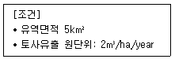
- 10
- 100
- 500
- 1000
(정답률: 알수없음)
72. 지역 내(on-site)저류시설 중 침수형 저류시설의 저류한계수심이 가장 낮은 시설은?
- 공원저류
- 주차장저류
- 운동장저류
- 건물간저류
(정답률: 알수없음)
73. 소하천설계기준상 농경지 지역 소하천의 설계빈도는?
- 10~20년
- 20~40년
- 30~80년
- 70~100년
(정답률: 알수없음)
74. 사면 안정성 해석 프로그램이 아닌 것은?
- SLIDE
- SWEDGE
- SLOPE/W
- XP-SWMM
(정답률: 알수없음)
75. 다음에서 설명하는 지진해일분석 프로그램은?
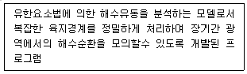
- POM
- EFDC
- WEPP
- ADCIRC
(정답률: 알수없음)
76. 다음에서 설명하는 것은?
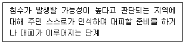
- 대피명령단계
- 강제대피단계
- 대피주의단계
- 자율대피단계
(정답률: 알수없음)
77. [조건]을 활용하였을 때 직사각형 단면 수로의 경심과 유속은?
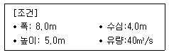
- 경심: 1.0m , 유속: 1.25m/s
- 경심: 1.0m , 유속: 1.40m/s
- 경심: 2.0m , 유속: 1.25m/s
- 경심: 2.0m , 유속: 1.40m/s
(정답률: 알수없음)
78. 재해정보지도 작성을 위하여 조사·수집하여야하는 기본자료를 모두 고른 것은?
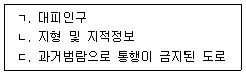
- ㄱ, ㄴ
- ㄴ, ㄷ
- ㄱ, ㄷ
- ㄱ,ㄴ,ㄷ
(정답률: 알수없음)
79. 우수유출저감시설의 배수구역 내 지역구분에 관한 사항중 틀린 것은?
- 유수지역에 침투시설이나 배수펌프장 설치시 지역외 저류시설 설치보다 경제적 효과가 크다.
- 보수지역은 우수를 일시적으로 침투또는 체류시키는 기능을 치수상 확보하거나 증대시킬 필요가 있는 지역을 말한다.
- 유수지역은 우수 또는 하천의 유수를 유입시키고 일시적으로 저류하는 기능을 확보할 필요가 있는 지역을 말한다.
- 저지지역은 배수구역내의 우수가 체류하여 하천에 유출되지않고 하천의 유수가 범람할 우려가 있는 지역중, 적극적으로 침수방지를 도모할 필요가 있는 지역을 말한다.
(정답률: 알수없음)
80. 자연재해 저감대책 수립 시 공간적 구분의 순서로 맞는 것은?
- 위험지구단위 → 수계단위 → 전 지역단위
- 전 지역단위 → 수계단위 → 위험지구단위
- 수계단위 → 위험지구단위 → 전 지역단위
- 전 지역단위 → 위험지구단위 → 수계단위
(정답률: 알수없음)
5과목: 방재사업
81. 방재시설 지반계측계획 수립시 계측위치의 선정조건과 가장 거리가 먼 것은?
- 주변에 특수시설이 있는 지점
- 설계와 시공면에서 대표적인 지점
- 비교적 단순하고 대표적인 지반상태를 갖는 지점
- 기기의 설치와 계측이 용이하며 공사에 지장을 적게 주는 지점
(정답률: 알수없음)
82. 방재사업의 경제성 분석을 위한 지표의 설명으로 틀린 것은?
- 내부수익율(IRR)은 사업 규모에 대한 정보가 반영되지 않는다.
- 순현재가치(NPV)는 경합하는 상ㅂ간의 우선순위를 결정할 때 용이하다.
- 비용-편익비(B/C)는 투자자본의 효율성을 나타내므로 비율이 클수록 투자효과가 크다.
- 평균수익률(ARR)은 화폐의 시간가치를 무시한다.
(정답률: 알수없음)
83. 자연재해대책법령상 재해대장에 관한 설명중 틀린 것은?
- 재해대장은 피해시설물별로 작성·관리하여야 한다.
- 재해대장은 전자적방법으로 작성 및 관리를 할 수 없다.
- 재해대장 작성 시 응급조치 내용 피해복구에 따른 기대효과 등의 피해사항을 포함하여야 한다.
- 지방자치단체의 장과 관계행정기관의 장은 소관 시설·재산등에 관한 피해 상황등을 재해대장에 기록하여 보관하여야 한다.
(정답률: 알수없음)
84. 다음에서 설명하는 시방서는?
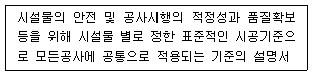
- 개방시방서
- 전문시방서
- 전용시방서
- 표준시방서
(정답률: 알수없음)
85. 자연재해위험지구 관리지침상 총농작물 피해액 계산식을 옳은 것은?
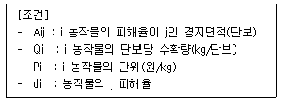
- ∑Aij × Qi × Pi × di
- ∑(Aij × Qi × Pi) × di
- ∑(Aij × Qi) × Pi × di
- ∑Aij × (Qi ÷ Pi) × di
(정답률: 알수없음)
86. 자연재해위험 갯ㄴ지구 관리지침상 개선법 및 다차원법에 의한 이재민 피해액산정에 대한 설명 중 틀린 것은?
- 대피일수는 평균 10일로 산정한다.
- 침수면적당 발생 이재민수를 적용한다.
- 천재지변이므로 근로곤란으로 인한 기회비용은 제외한다.
- 개선법에서는 간편법에서 사용하는 원단위법을 활용한다.
(정답률: 알수없음)
87. 도시·군 계획시설의 결정·구조 및 설치기준에관한 규칙상 방재시설이 아닌 것은?
- 하천
- 저수지
- 상수도
- 방풍설비
(정답률: 알수없음)
88. 산사태가 발생한 지역의 우수배제를 위하여 우수거를 설계하려고 한다 [조건]을 활용할 때 합리식에 의한 설계유량(m3/s)?
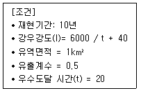
- 4.6
- 13.8 9
- 16.17
- 20.28
(정답률: 알수없음)
89. 건설산업기본법령상 댐의 본체 및 여수로부분 공사 하자담보 책임기간으로 옳은 것은?
- 3년
- 5년
- 7년
- 10년
(정답률: 알수없음)
90. 배수로의 수심이 2m, 폭 4m인 콘크리트 직사각형 수로의 유량(m3/s)은? (단, 조도계수 n=0.012, 경사 I=0.0009이다.)
- 15
- 20
- 25
- 30
(정답률: 알수없음)
91. 다음에서 설명하는 사방사업의 용어는?
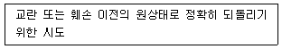
- 복구
- 보전
- 복원
- 보전
(정답률: 알수없음)
92. 자연재해위험개선지구 관리지침상 자연재해 위험개선지구 정비계획 수립을 위하여 검토·반영하여야 하는 사항이 아닌 것은? (단, 그밖에 검토가 필요한 사항은 제외한다.)
- 다른 사업과의 차별성 여부
- 정비사업의 수혜도 및 효과 분석
- 정비사업에 따른 지역주민 의견수렴 결과 검토
- 재해위험개선지구별 경제성분석 등을 통한 투자우선순위 검토
(정답률: 알수없음)
93. 방재관리대책 업무 대행비용의 적산체계에서 직접경비에 해당하지 않는 것은?
- 여비
- 모형제작비
- 측량비
- 조사연구비
(정답률: 알수없음)
94. 다음의 내용이 뜻하는 것으로 옳은 것은?
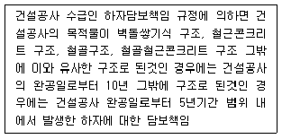
- 하자담보
- 하자검사
- 하자책임기간
- 하자보수 보증금
(정답률: 알수없음)
95. 하천 방재시설 유지관리 매뉴얼 작성시 고려사항으로 환경적요인에 해당하지 않는 것은?
- 세굴
- 침수
- 누수
- 지하수 수압상승
(정답률: 알수없음)
96. 해안 방재시설 시공 시 속채움 사석의 시공기준에 대한 내용중 틀린 것은?
- 속채움 사석은 시공 중 파랑등에 의한 본체의 이동이나 손상방지를 위해 본체거치 후 천천히 시공하여야 한다.
- 속채움 공사중 케이슨 등의 각 격실간 높이차가 발생하지 않도록 격실별로 고르게 채워야 한다.
- 속채움 시공 시 케이슨 등의 본체에 손상을 주지 않도록 주의하여야한다.
- 셀블록의 속채움은 상하블록 사이의 채움재간 엇물림이 양호하도록 하여야한다.
(정답률: 알수없음)
97. 다음에서 설명하는 용어로 옳은 것은?
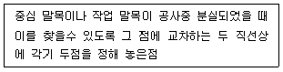
- 수준점
- 인조점
- 도근점
- 가설수준점
(정답률: 알수없음)
98. 도시·군계획시설의 결정·구조 및 설치기준에 관한 규칙상 방풍설비의 결정기준에 관한 사항으로 ( )에 알맞은 내용은?
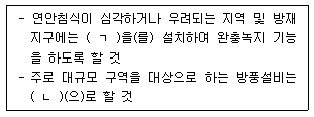
- ㄱ : 방풍림, ㄴ : 방풍림시설
- ㄱ : 방풍림, ㄴ : 방풍담장시설
- ㄱ : 방풍망, ㄴ : 방풍림시설
- ㄱ : 방풍망, ㄴ : 방풍담장시설
(정답률: 알수없음)
99. 주어진 크기의 홍수가 일정한 기간 동안 발생할 수 있는 확률을 의미 하는 것은?
- 첨두홍수량
- 홍수빈도율
- 설계홍수량
- 설계홍수빈도
(정답률: 알수없음)
100. 시설물의 안전 및 유지관리에 관한 특별법령상 안전등급 A등급의 정밀 안전점검, 정밀안전진단의 실시 시기로 옳은 것은?
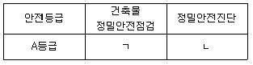
- ㄱ : 3년에 1회이상, ㄴ : 3년에 1회 이상
- ㄱ : 3년에 1회이상, ㄴ : 6년에 1회 이상
- ㄱ : 4년에 1회이상, ㄴ : 3년에 1회 이상
- ㄱ : 4년에 1회이상, ㄴ : 6년에 1회 이상
(정답률: 알수없음)